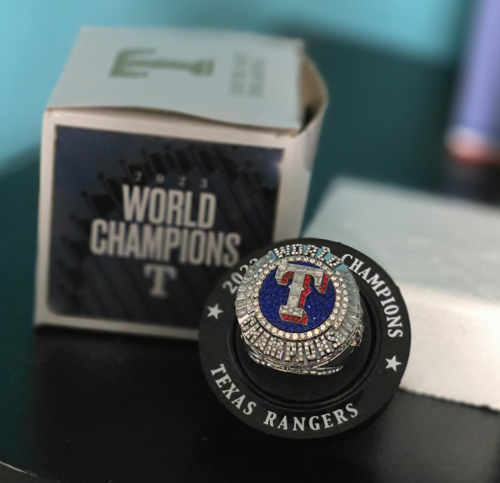
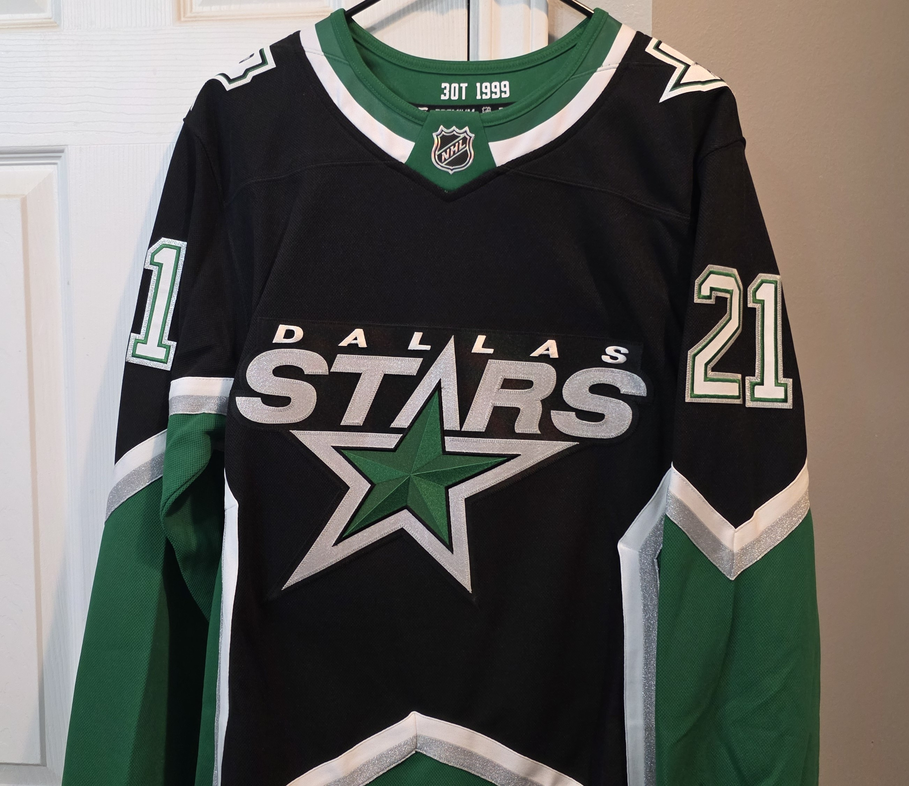
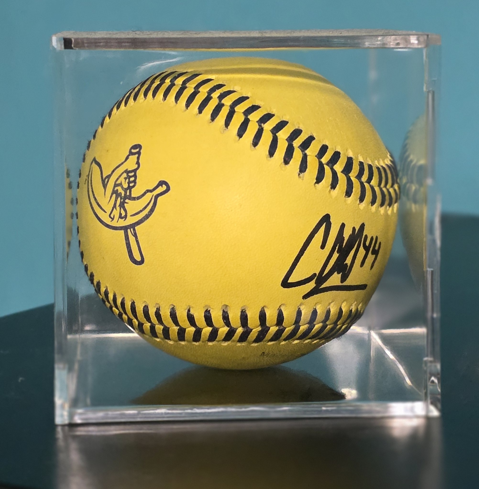
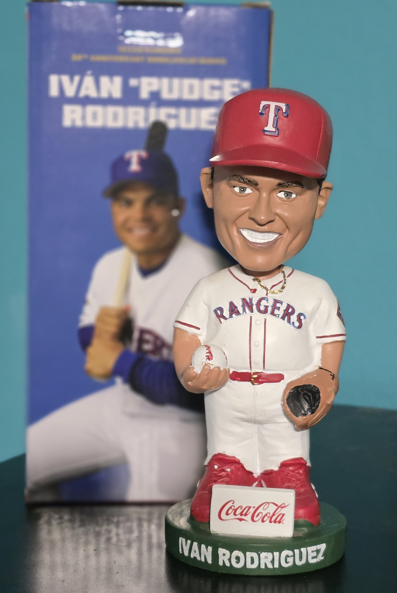
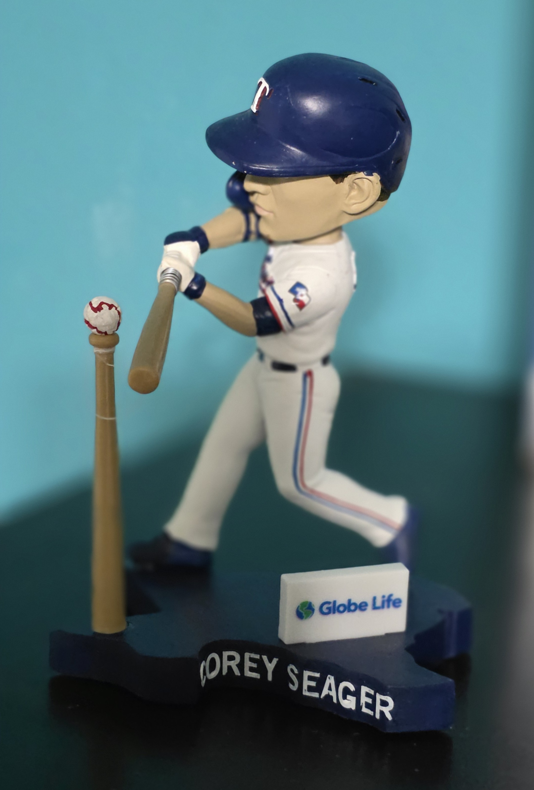
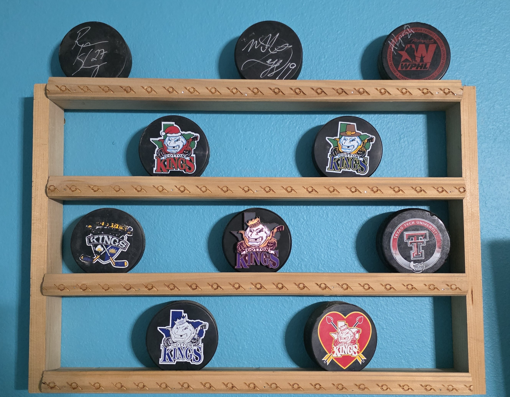
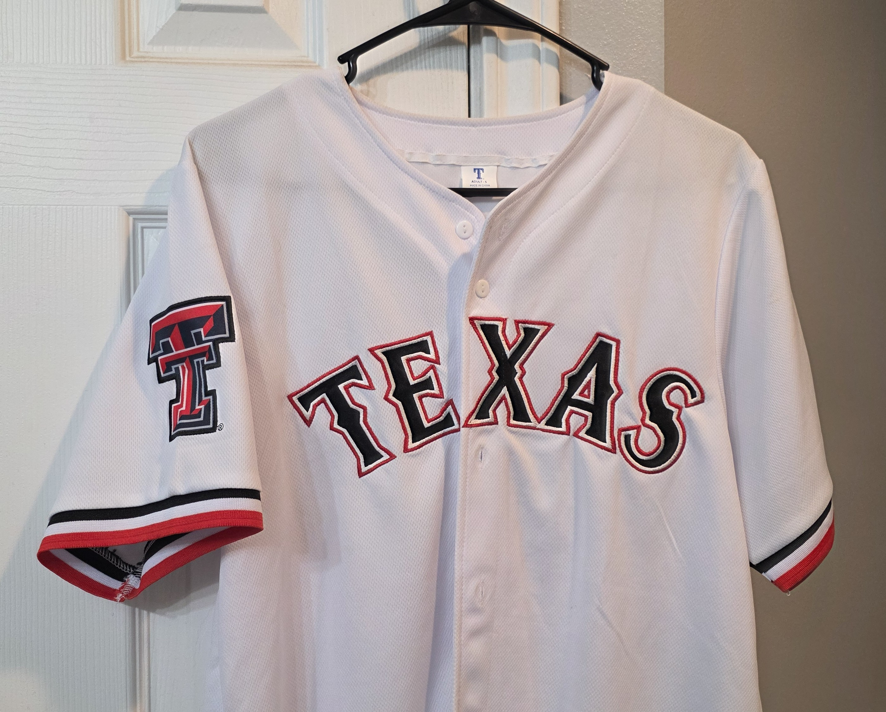
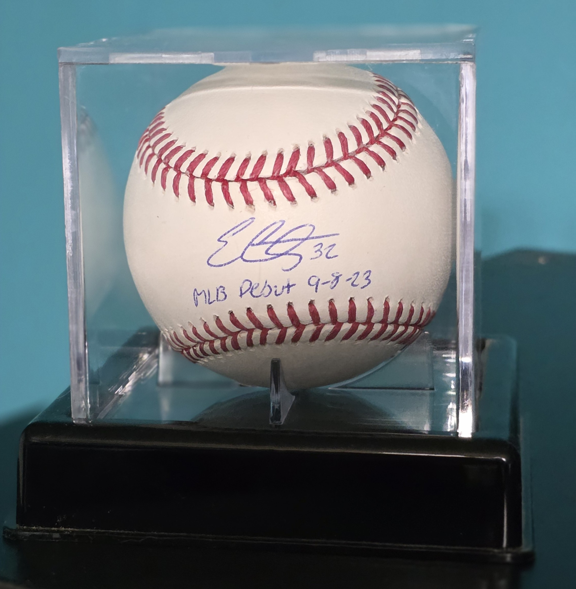

My Favorite Sports Collectibles & Items
This is a collection of my favorite sports collectibles and items from my favorite teams. I have been collecting for years, and each piece holds a special place in my heart. What I am sharing here is just a fraction of what I own, including hockey pucks, bobbleheads, autographed baseballs, replica collectors items, and my favorite jerseys. I love displaying them in my favorite room in the house—my nerdcave—where I also watch my teams play. Collecting these items brings me a lot of joy, and I hope to keep growing my collection for years to come!

2023 World Series Replica Ring
Replica | 2024 | Baseball
This is one of my favorite items in my collection. I was lucky enough to get this replica ring after the Texas Rangers won the world series in 2023. I never thought I would actually see them win, let along get such a cool collectors item. It has a lot of detail and sentimental value that I will always treasure.

"99's" Dallas Stars Jersey
Jersey | 2026 | NHL
This is currently my favorite jersey I own. Last seasons, the Dallas stars introduced the "99's" jersey as a throwback to the 1999 Stanley Cup winning team. I got one of my favorite players names on this jersey and I got to wear it to a game back in January. This jersey has a lot of little details and I think it looks really awesome!

Bananaball Baseball
Baseball | 2026 | Bananaball
I have this signed Bananaball baseball from a game I went to earlier in 2026. This was my first time going to a Bananaball game and it did not disappoint! I went with my 2 kids and my parents and we had such an amazing time. We got to meet players, take pictures, and lots of laughs. This basebeall is a great reminder of the wonderful memories we made that day!

Ivan "Pudge" Rodriguez Bobblehead
Bobblehead | 2022 | MLB
This is a bobblehead of one of the favorite baseball players and one of the best catchers ever, Ivan "Pudge" Rodriguez. I got this bobblehead at a game I went to in 2022. I love the detail on this bobblehead as well as the box it came in! It is a great reminder of the fun time I had at that game and memories of watching him play as a kid!

Corey Seager Bobblehead
Bobblehead | 2026 | MLB
This is the most recent bobblehead I have collected. I got this at a game I went in July 2026. This bobblehead is a tribute to the world series winning team of 2023. This bobblehead is really unique because you can pull the bat back, and it actually hits the little ball off the tee! The game I got this at had a lot of great memories as well. Our friends got to join us we surprised all the kids. We had a lot of family joing us too. We receive lots of collectibles/memorabilia. And the "Soccerroos" from Australia were at the game because it was during the World Cup!

Shelf of Pucks
Hockey Pucks | 2007 | Misc
This shelf has a LOT of sentimental value to me! I have been collecting hockey pucks since I was a kid. I have pucks from several different teams, but mostly the Lubbock Cotton Kings. *RIP* Hockey in itself holds a huge place in my heart, but these pucks are great reminders of the fun times I had with my family and the time we spent playing hockey together. The shelf is also super special because my dad build these shelves for me to display my pucks on! I will always treasure this shelf and the memories it holds.

TTU Rangers Jersey
Jersey | 2025 | MLB
This is one of my favorite Texas Rangers jerseys I own. I received this jersey from a game we went to in 2025. This was for the themed Texas Tech University night. It is a crossover between the Texas Rangers and Texas Tech University colors. It has Josh Jung's name and number on it, as he played for TTU baseball before going to the Rangers. I love this jersey so much and I love that it is a crossover between my favorite school and my favorite MLB team!

Signed Rangers Baseball
Baseball | 2024 | MLB
This baseballed that is signed by Texas Rangers player Evan Carter after his debut MLB game in 2023 is a very special item in my collection. It was a Christmas gift for me in 2023, and honestly one of the coolest things I have ever received. I love that I have something that is so "fresh" and who knows, maybe this one will be worth something someday!